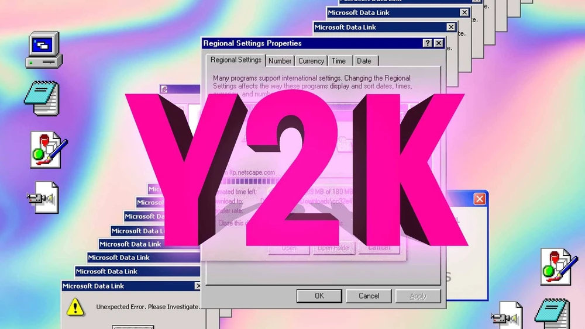
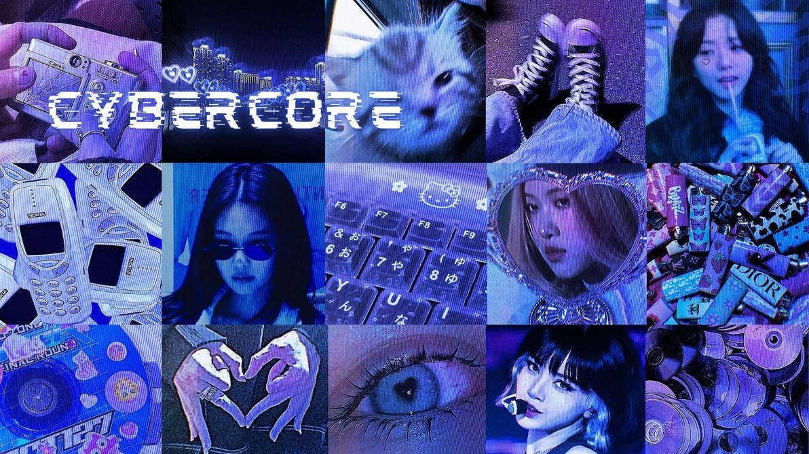
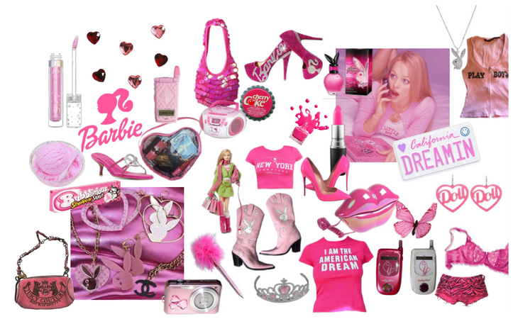
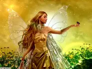
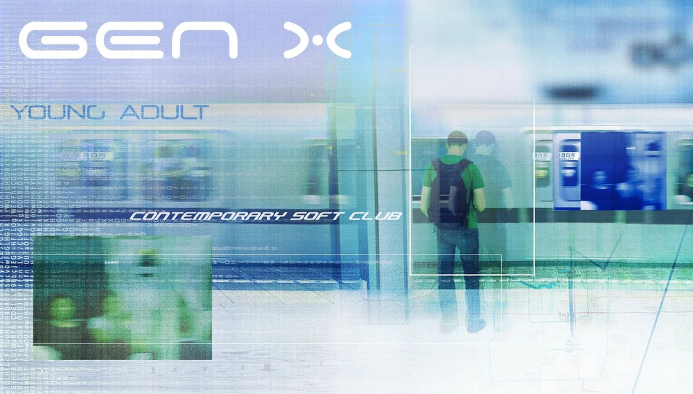

|
Hi! Im Bahaa! Welcome to my website. This webpage is a part of the Time Capsule I made to showcase old UI aesthetics. Enjoy! :) |
||
Y2KSince the advent of the Internet, Y2K (short for Year 2000) has become a broad term that describes the societal zeitgeist of the world between the late 1990s to the early 2000s. Named after the Year 2000 problem, it is characterized by fashion, hardware design, music, futuristic technology, and optimism relevant to the time period. Since the Mid-Late 2010s, the group of aesthetics described as Y2K have made a resurgence in popular culture and social media. Y2K originally referred to an aesthetic prevalent in popular culture from roughly 1997 to 2004. However, the term has massively expanded since then due to misappropriation and semantic shift, and this specific aesthetic is now retroactively known as Cyber Y2K. This era's predecessors include the Memphis Design era (circa 1984-1997) and the Grunge era (c. 1991-1997) and was later succeeded by the Frutiger Aero era (circa 2004-2013). Y2K AestheticsCybercoreCybercore (also referred to as Y2K Futurism, Cyber Y2K, Y3K (in Japan), or just simply Y2K) is an aesthetic that was prevalent in popular culture from roughly 1997 to 2004, succeeding the Memphis Design and Grunge eras and overlapping with the McBling, UrBling, Surf Crush, and 2K1 aesthetics. Cybercore aesthetics use futuristic graphic design and CGI. Graphic designs usually feature thick lines, bold minimalism, and heavy use of iconography. CGI art is more blobby looking, having more gradients in contrast to Metalheart or Chromecore. Common colors used in Cybercore art are, but not limited to, chrome, icy blue, ocean, bright oranges, glossy white, and black (for linework). McblingMcBling is an aesthetic that was popular from roughly 2000 to 2008. overlapping with the Y2K, UrBling, Surf Crush, Frutiger Aero, 2K1, and 2K7aesthetics. It was coined through a Facebook page in 2016 made by Evan Collins of the Y2K Aesthetics Institute. It is often loosely referred to as "Y2K fashion", "Trashy Y2K", or simply "Y2K" on social media, FantasY2KFantasY2K (a portmanteau of "Fantasy" and "Y2K") is an aesthetic that takes elements of Medieval Fantasy aesthetics and reinterprets them to conform to the fashion trends of the 2000s. The balance of these clashing styles can vary from haute couture runway looks with vaguely fantastical themes, to film and TV costumes that are passable as loosely historical, but with definite anachronisms such as modern hairstyles, makeup and silhouettes. The aesthetic takes an unapologetically kitsch approach in its disregard for historical accuracy in favor of contemporary trends. For this reason, it is often adopted with self-aware irony, particularly in satirical media such as A Knight's Tale or Ella Enchanted. Gen X Soft ClubGen X Soft Club was a popular aesthetic in the Late-1990s to Late-2000s, branching from the popular Cybercore movement of the time. It is considered a more natural and "down-to-earth" look at futurist optimism of the time. It's characterized by urban typography, a use of plants/nature, underground metros/train stations, airports, city skylines, and a heavy use of minimalism/cool color schemes. Embracing the Y2K aestheticThe Y2K aesthetic encapsulates a unique era in cultural history, blending elements of retro-futurism, technological optimism, and vibrant design. From the late 1990s to the early 2000s, this aesthetic permeated various aspects of society, including fashion, art, music, and technology. Characterized by bold colors, futuristic motifs, and a sense of boundless possibility, Y2K aesthetics continue to captivate contemporary audiences, serving as a nostalgic homage to a bygone era while also inspiring new creative endeavors. In our exploration of the Y2K aesthetic, we've delved into its origins, its impact on popular culture, and its enduring legacy. From cybercore graphic designs to the iconic imagery of early internet culture, the Y2K aesthetic remains a vibrant tapestry of creativity and innovation. As we navigate the ever-changing landscape of aesthetics and trends, let us continue to celebrate and embrace the spirit of Y2K, allowing its influence to shape our creative expressions and inspire future generations. |
||
Y2K Overview!! |
||